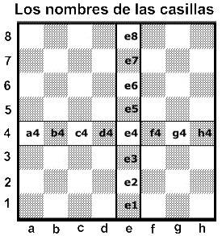

Notación
La notación en ajedrez es un sistema utilizado para registrar y describir los movimientos de las piezas durante una partida. Permite a los jugadores y espectadores seguir la partida de manera clara y precisa, facilitando el análisis y estudio de las partidas.
En esta sección vas a poder aprender sobre la notación algebraica, que es el sistema de notación más utilizado para registrar y describir los movimientos en una partida de ajedrez.
Notación algebraica
La notación algebraica es un sistema de notación que utiliza letras y números para identificar las casillas del tablero de ajedrez. Cada casilla se representa mediante una combinación de una letra y un número, lo que permite registrar los movimientos de las piezas de manera clara y concisa.
La notación algebraica utiliza letras y números para identificar las casillas del tablero. Las columnas se etiquetan con letras de la 'a' a la 'h' (o sea, de la primera a la octava letra del alfabeto), mientras que las filas se numeran del 1 al 8. Cada casilla se identifica combinando la letra de la columna con el número de la fila correspondiente.
Por ejemplo, la casilla en la columna 'e' y la fila '4' se denomina "e4". De esta manera, cada movimiento de una pieza se puede registrar de forma precisa y concisa.

Movimientos de las piezas
Los movimientos de las piezas se anotan utilizando la letra inicial de la pieza (excepto para los peones, que no llevan letra) seguida de la casilla a la que se mueve. Por ejemplo, "Nf3" indica que un caballo se mueve a la casilla f3, mientras que "e4" indica que un peón se mueve a la casilla e4. Tambien se pueden indicar capturas, jaques y jaque mate utilizando símbolos específicos. Por ejemplo, "Nxe5" indica que un caballo captura una pieza en la casilla e5, mientras que "Qh5+" indica que la dama se mueve a la casilla h5 dando jaque al rey enemigo.
Las piezas se representan de la siguiente manera:
| Pieza | Notación | Ejemplo de uso |
|---|---|---|
| Rey | K | Kf3 |
| Dama | Q | Qh5+ |
| Torre | R | Ra5 |
| Alfil | B | Bc4 |
| Caballo | N | Nf3 |
| Peón | (sin letra) | e4 |
Mientras que los símbolos utilizados para indicar capturas, jaques y jaque mate son los siguientes:
| Acción | Símbolo | Ejemplo de uso |
|---|---|---|
| Captura | x | Nxe5 |
| Jaque | + | Qh5+ |
| Jaque mate | # | Qh5# |
| Coronación | = | exd8=Q |
También existen otras notaciones especiales para indicar movimientos como el enroque, que se representa con "O-O" para el enroque corto y "O-O-O" para el enroque largo.
Ejemplo de partida
A continuación, se muestra un ejemplo de una partida de ajedrez utilizando la notación algebraica.
Las jugadas se registran de la siguiente manera:
1. e4 e5
2. Nf3 Nc6
3. Bb5 a6
4. Ba4 Nf6
5. O-O Be7
Y se leen de la siguiente manera:
1. e4 e5: El jugador de blancas mueve su peón a e4 y el jugador de negras mueve su peón a e5.
2. Nf3 Nc6: El jugador de blancas mueve su caballo a f3 y el jugador de negras mueve su caballo a c6.
3. Bb5 a6: El jugador de blancas mueve su alfil a b5 y el jugador de negras mueve su peón a a6.
4. Ba4 Nf6: El jugador de blancas mueve su alfil a a4 y el jugador de negras mueve su caballo a f6.
5. O-O Be7: El jugador de blancas realiza un enroque corto y el jugador de negras mueve su alfil a e7.